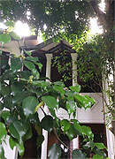
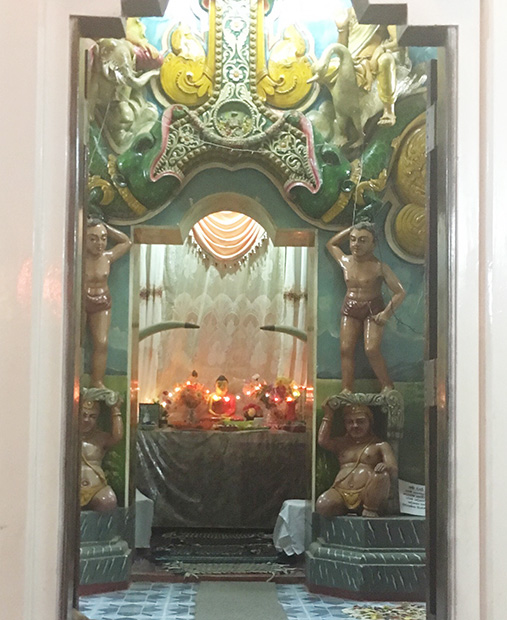
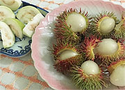
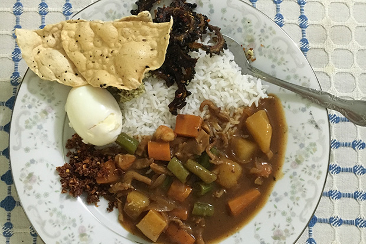
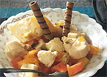
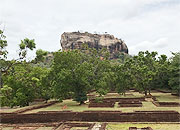
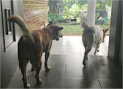
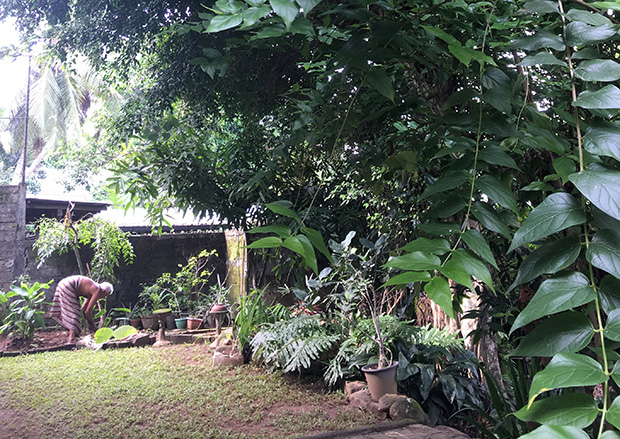
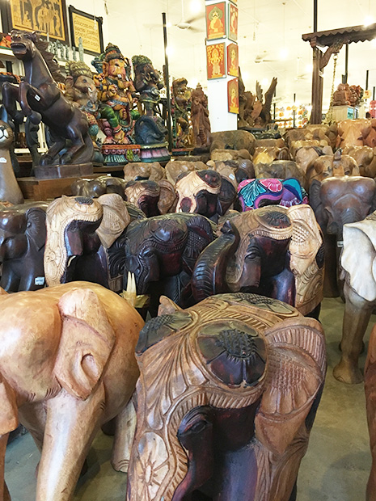

「今回の留学は、とても大満足でした！
初めての海外で、しかも出発直前にテロが発生し、治安の面が大変心配でした。
また、ホームステイ先で上手くやっていけるのかも不安でしたが、その心配はマーネルに直接お会いし不安は無くなり、安心して生活ができました。
インターネットでこの留学プログラムを見つけ、
・スリランカの国に興味があった。
・低価格
・マンツーマンでしっかり英語が学べる。
この三点が参加を決めたポイントです！！

英語レッスンについてですが、私はとても英語に苦手意識があり、英語を話すことを失敗してはいけないという恐怖感がありました。
ですがレッスンを受ける中で、見事その壁が壊れました。
意識革命です！！
それからは、英語が楽しく、もっとコミニケーションを取りたくて勉強することができました。
宿題は沢山でしたが、英語の勉強が目的なので全く苦ではありませんでした。
むしろ今思うと大変良かったと思います。

スリランカでのホームステイは、大変満足しています。
私の人生においても貴重な時間だったし、マーネルファミリーと出会えた事は一生の宝だと思います。
今まで海外留学にずっと行きたいと学生時代から考えていました。
しかし、金銭面と英語に対する恐怖感で行けずにおりましたが、御社のホームページを見つけ行くと決めました。
マンツーマン、低価格、そしてスリランカ！！
(アーユルヴェーダに興味がありスリランカに関心がありました。）

現地の生活は日本に比べテクノロジーの面は劣っていますが、私にはスリランカの生活が性に合っていました。
ゴミがほとんど出ない、物を大切に長く使う、節電節水等、やらざるを得ない環境ということもありますが、本物のエコフレンドリーであると思います。
毎日4～5回のティータイムでコミュニケーションを大切にし、フレンドリーで明るいスリランカ人が大好きです。
私の人生で、世界感が広がったホームステイ！！
感謝です！！

ホストファミリーは、本当の家族のように接してくれ、まるで実家にいる時のようにリラックスすることができました。
マーネルの食事がとっっってもおいしい！！
料理レッスンのコースを作っても良いのでは？と思うほど毎回衝撃の料理やデザートでした。
庭が広くフルーツを採ったり、近所の子供たちと話したり、とても可愛い犬達と毎日素晴らしい時間を過ごしました。

今回何より良かったのはマーネルの家にホームステイできたことです。
他の方ではここまで満足できなかったと思います。
本当の家族のようにマーネルファミリーが接してくれ、帰国する時は寂しかったです。
マーネルが良く気が付く方で細かい部分は先回りし伝えてくれ、居心地が良かったです。
低開発村視察は、実際に視察できて良かったと思いました。
私や日本人の多くは『貧しい=不幸』という考え方だと思います。
貧しさの度合いにもよりますが、皆が健康で細くも生活できるレベルであれば幸せなんだと思わされました。
幸福感のとり方だと思います。
スリランカの家族は、笑顔がキラキラとしています。
日本は、裕福ですがうつ病や自殺者が多い。
日本が見習わなければならない”幸福感のとり方”だと感じました。

スリランカに行く前は色々と情報をあさっていたので、街に対するイメージはほぼ変わりませんでした。
ですが、スリランカ人の印象は大きく変わりました。
人によりますが、大変フレンドリーで助け合い、親切です。
シンハラ語を少し話すと皆喜んで集まってきて親切にしてくれました。

またスリランカへは、必ず行きます。
お金があればこの留学プログラムを利用したいと思います。
また、知人にも全力でお勧めしているところです。
甥っ子10歳と6歳が大きくなったらマーネル宅でのホームステイをさせたいなと勝手に考えているところです。

空港に到着した際に、マーネルを探すもなかなか落ち合えず不安でした。
SIMカードを購入していたので電話をしたら連絡が取れました。
もし連絡が取れない状況だったら大変だったと思います。
車の車種と車のナンバーを聞いておくべきだったのと、待ち合わせ場所を確実にしておけばよかったと反省しました。

マーネルは英語の先生、人生の先輩としても大変素晴らしい方でした！！
マーネルが最初のレッスン時に英語恐怖症の私に言ってくれた言葉のおかげで英語が楽しいと感じれる様になりました。
“自分を信じて”とよくマーネルは口にしていました。
英語を通してですが、自分のコンプレックスの核に触れた言葉でした。
違う分野でも活きてくる言葉で、大変感謝しています。
安心して様々な事を学べ、私の人生で重要なポイントとなりました。
マーネルファミリーに出会わせていただいた御社に感謝の気持ちで一杯です。
ありがとうございました！！」